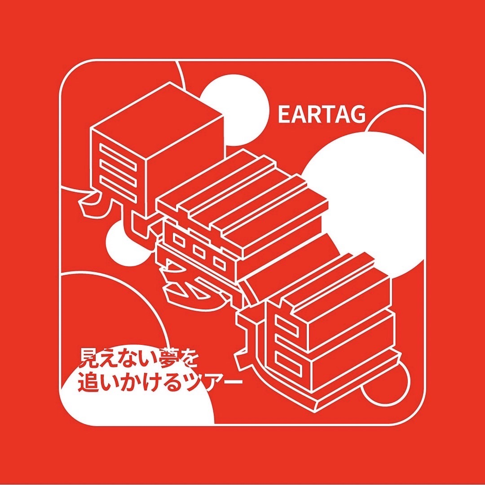
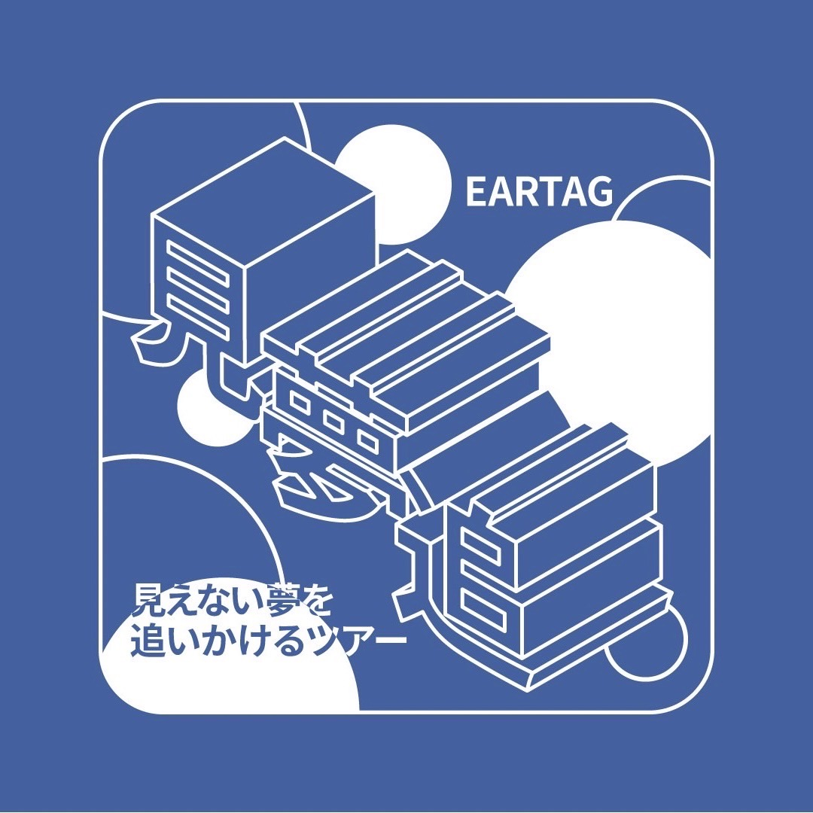
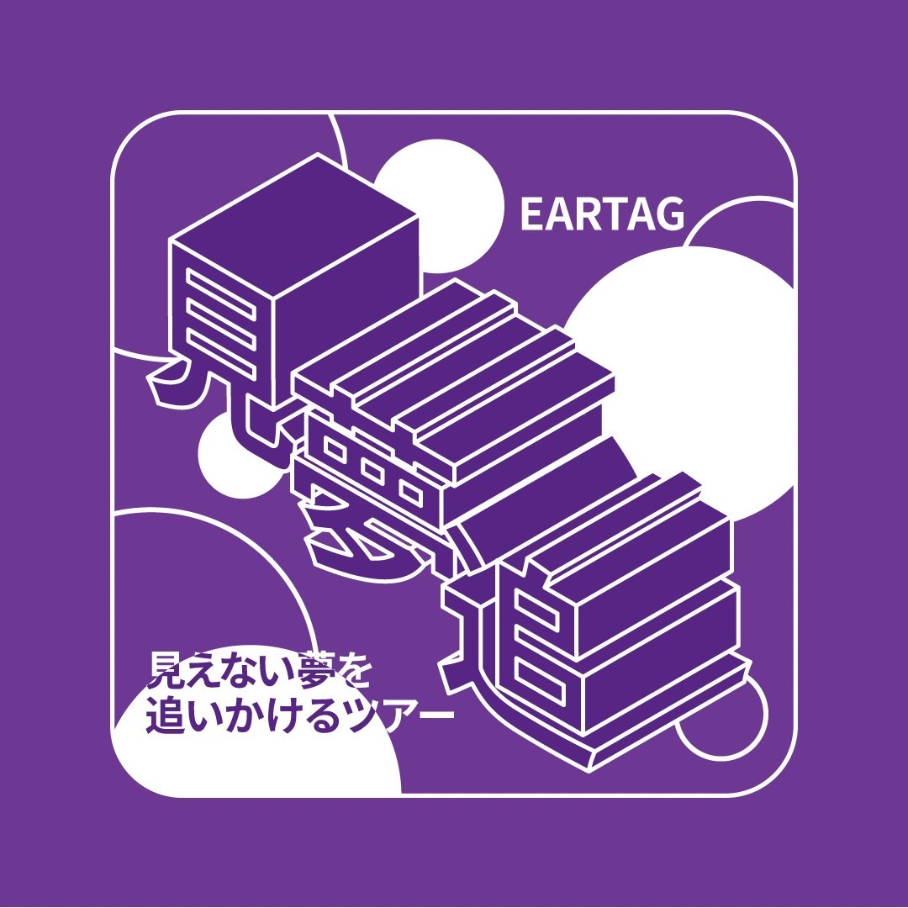
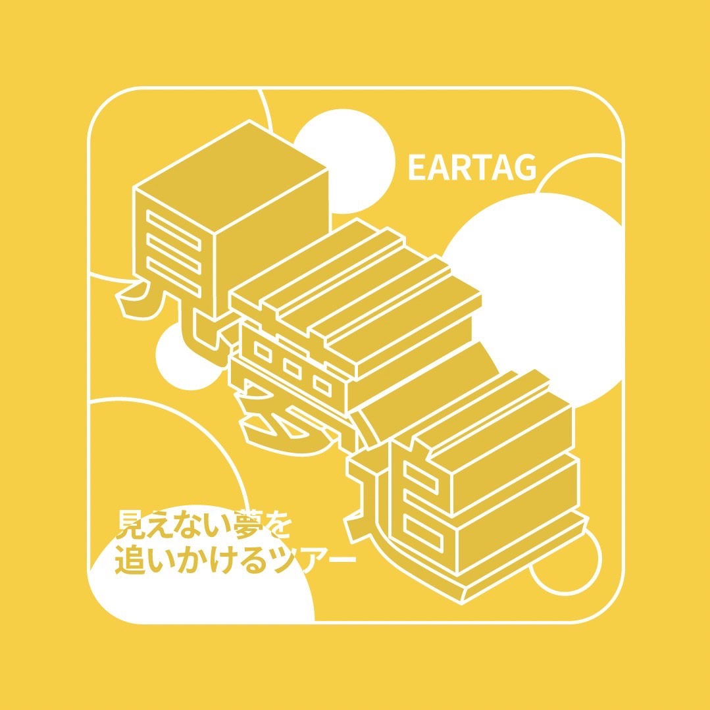

Work04 ロゴステッカーデザイン
熊本発のEARTAGが2024年9月13日にデジタルリリースした1stEP「私らのヒーロー」のリリースツアー（9月20日〜11月17日）で、会場限定販売されたステッカーのデザインをしました。




クライアント
---
担当した作業
ロゴステッカーデザイン
制作期間
2024.8.14 - 9.20
使用したソフト
Adobe Illustrator
注意・工夫した点
グッズのタオルがドットを用いたデザインだったため、要素の図形を円にし、枠線も角丸にするなどして、印象を統一した点。
タイトルの“見えない”にちなんで、ロゴ内の文字の一部をクリッピングマスクで反転させた点。
課題
色の明度が4色それぞれ統一されていない点。